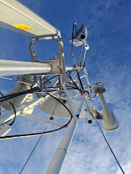

Instalacion de antenas de radio enlace de Internet - ( TELECOMUICACIONES SOLNET) ( Puquio - Valle sondondo )
En la comunicacion social es muy importante el internet en la cual tubimos la obligacion de poder llevar internet al Valle Sondondo, (Aucara) en la cual se encuentra ubicaco en la provincia de lucanas , los trabajos se realizaron con exito con la empresa "TELECOMUICACIONES SOLNET"
